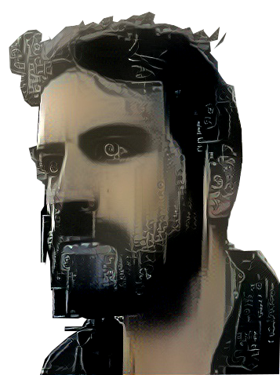

Computational designer and architect interested in the intersection between artificial intelligence and design. My research and teaching address topics such as Cybernetics, classical AI, bio-inspired AI, agent-based modeling, and Machine learning for design exploration. I develop generative systems to address problems in the different scales of the built environment. Currently, I investigate the application of AI in early spatial exploration, such as in architectural composition and space planning.